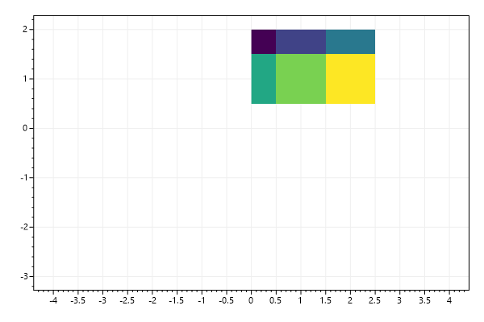
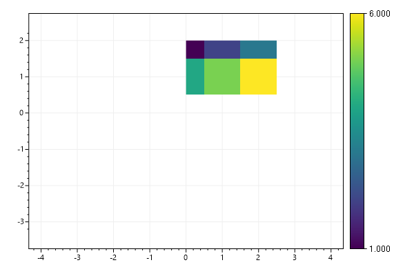
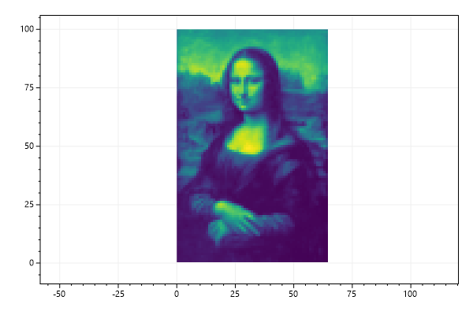
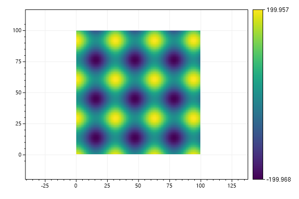
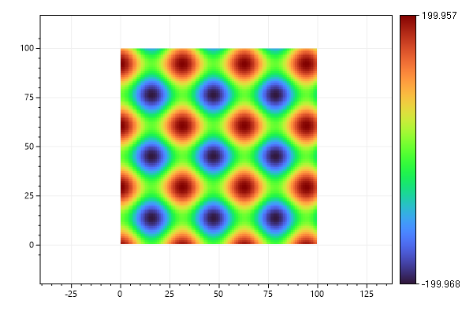
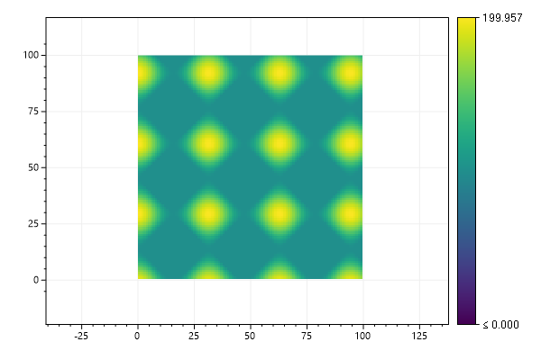
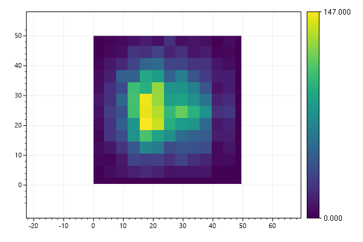
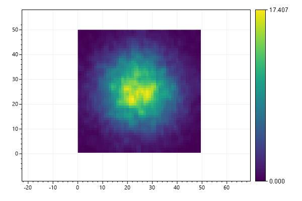

ScottPlot Cookbook: Plottable - Heatmap
⚠️ Documentation is version-specific: This page was generated forScottPlot 4.1.4-beta
Additional documentation and more version-specific cookbooks are on the ScottPlot Website
Heatmap Quickstart
Heatmaps display a 2D array using a colormap.var plt = new ScottPlot.Plot(600, 400);
double[,] data2D = { { 1, 2, 3 },
{ 4, 5, 6 } };
plt.AddHeatmap(data2D);
plt.SaveFig("heatmap_quickstart.png");

Heatmap with Colorbar
Colorbars are often added when heatmaps are used.var plt = new ScottPlot.Plot(600, 400);
double[,] data2D = { { 1, 2, 3 },
{ 4, 5, 6 } };
var hm = plt.AddHeatmap(data2D);
var cb = plt.AddColorbar(hm);
plt.SaveFig("heatmap_colorbar.png");

Heatmap Image
Image data can be plotted using the heatmap plot type.var plt = new ScottPlot.Plot(600, 400);
double[,] imageData = DataGen.SampleImageData();
plt.AddHeatmap(imageData);
plt.SaveFig("heatmap_image.png");

2D Waveform
This example demonstrates a heatmap with 1000 tilesvar plt = new ScottPlot.Plot(600, 400);
int width = 100;
int height = 100;
double[,] intensities = new double[width, height];
for (int x = 0; x < width; x++)
for (int y = 0; y < height; y++)
intensities[x, y] = (Math.Sin(x * .2) + Math.Cos(y * .2)) * 100;
var hm = plt.AddHeatmap(intensities);
var cb = plt.AddColorbar(hm);
plt.SaveFig("heatmap_2dWaveform.png");

Colormap
Viridis is the default colormap, but several alternatives are available.var plt = new ScottPlot.Plot(600, 400);
double[,] intensities = new double[100, 100];
for (int x = 0; x < 100; x++)
for (int y = 0; y < 100; y++)
intensities[x, y] = (Math.Sin(x * .2) + Math.Cos(y * .2)) * 100;
var hm = plt.AddHeatmap(intensities, Drawing.Colormap.Turbo);
var cb = plt.AddColorbar(hm);
plt.SaveFig("heatmap_colormap.png");

Scale Limits
Heatmap colormap scale can use a defined min/max value.var plt = new ScottPlot.Plot(600, 400);
double[,] intensities = new double[100, 100];
for (int x = 0; x < 100; x++)
for (int y = 0; y < 100; y++)
intensities[x, y] = (Math.Sin(x * .2) + Math.Cos(y * .2)) * 100;
var hm = plt.AddHeatmap(intensities);
hm.Update(intensities, min: 0, max: 200);
var cb = plt.AddColorbar(hm);
plt.SaveFig("heatmap_limitScale.png");

Interpolation by Density
Heatmaps can be created from random 2D data points using the count within a square of fixed size.var plt = new ScottPlot.Plot(600, 400);
Random rand = new Random(0);
int[] xs = DataGen.RandomNormal(rand, 10000, 25, 10).Select(x => (int)x).ToArray();
int[] ys = DataGen.RandomNormal(rand, 10000, 25, 10).Select(y => (int)y).ToArray();
double[,] intensities = Tools.XYToIntensities(mode: IntensityMode.Density,
xs: xs, ys: ys, width: 50, height: 50, sampleWidth: 4);
var hm = plt.AddHeatmap(intensities);
var cb = plt.AddColorbar(hm);
plt.SaveFig("heatmap_density.png");

Gaussian Interpolation
Heatmaps can be created from 2D data points using bilinear interpolation with Gaussian weighting. This option results in a heatmap with a standard deviation of 4.var plt = new ScottPlot.Plot(600, 400);
Random rand = new Random(0);
int[] xs = DataGen.RandomNormal(rand, 10000, 25, 10).Select(x => (int)x).ToArray();
int[] ys = DataGen.RandomNormal(rand, 10000, 25, 10).Select(y => (int)y).ToArray();
double[,] intensities = Tools.XYToIntensities(mode: IntensityMode.Gaussian,
xs: xs, ys: ys, width: 50, height: 50, sampleWidth: 4);
var hm = plt.AddHeatmap(intensities);
var cb = plt.AddColorbar(hm);
plt.SaveFig("heatmap_gaussian.png");
